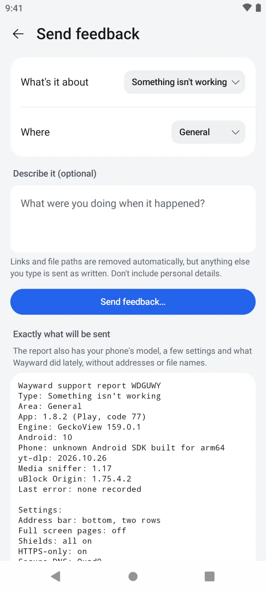
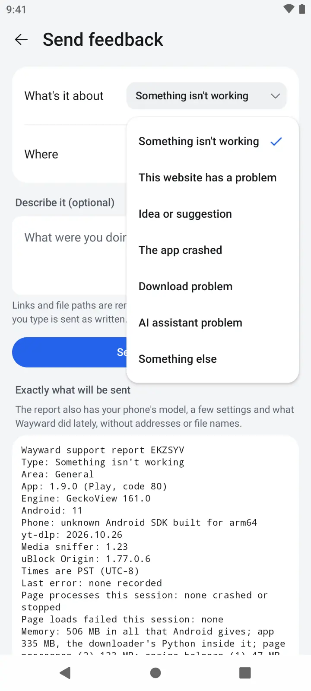
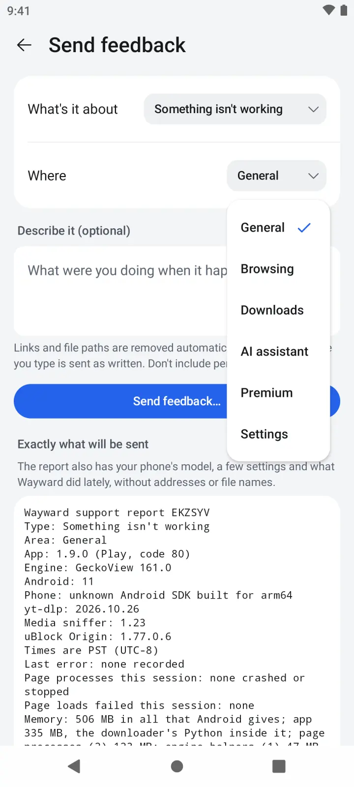
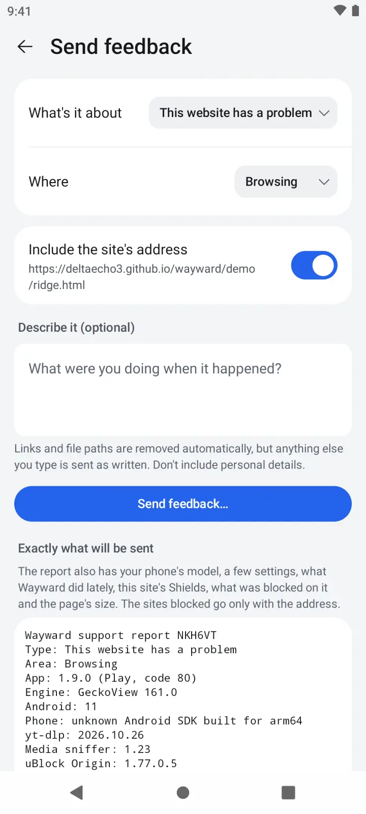
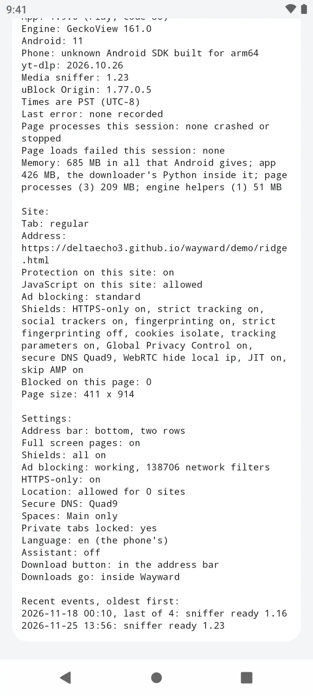
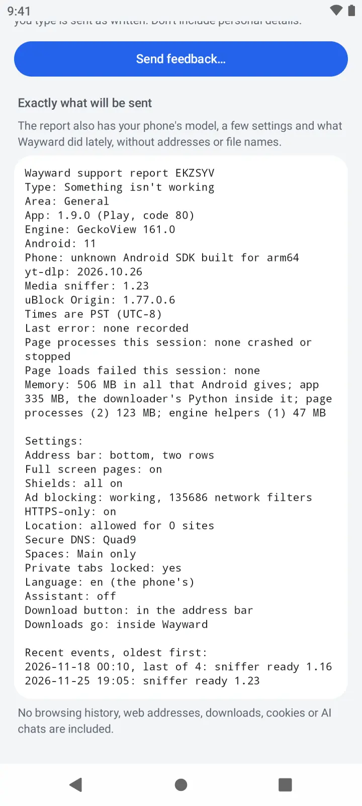

Send feedback or report a problem
How-to
Report a crash or other problem, or send an idea from inside Wayward. You see exactly what will be sent before anything goes, and nothing is ever sent automatically.
Send it
- Open the ⋮ menu and tap Settings.
- Near the end, in the Help and about group, tap Send feedback.
- Under What's it about, pick one: Something isn't working, This website has a problem, Idea or suggestion, The app crashed, Download problem, AI assistant problem or Something else.
- Under Where, pick the part of Wayward: General, Browsing, Downloads, AI assistant, Premium or Settings.
- Under Describe it (optional), say what happened in a few words.
- If you like, scroll down to Exactly what will be sent to read the whole report first.
- Tap Send feedback…, just under your description. Your phone's share menu opens with the report ready to email to us. Pick your email app and send it from there.




Report a website
On the site, tap the shield in the address bar, then Report a problem with this site (next to Protection on this site). The report opens on This website has a problem, about that page. Picked in Send feedback itself, that kind of report is about the tab you're on.
Include the site's address shows the address the report would carry: the site and the page's path, never what follows a ? or #, a name and password, or a part that looks like an e-mail address, a key or a long number (6 or more digits in a row, like an order or phone number). It starts on in a regular tab and off in a private tab. With it off, the report leaves out the address and the names of the sites blocked on the page, which can name it. A locked tab's report says nothing about its page.
The report also says how this site is protected (Protection on this site, JavaScript on this site, the ad blocking level and each Shield), how much was blocked on the page and the page's size on your screen.


What helps
- What you were doing, what you expected, and what happened instead.
- For a crash, pick The app crashed: the report then includes where Wayward crashed, which helps most.
- Links and file paths you type are taken out automatically (even a plain site name like example.com), but anything else is sent as you wrote it. Leave out personal details.
- The report goes out as an email from your own email app, so you can add to it there before you send: a screenshot, or the site it happened on.
What's in a report
Exactly what will be sent, at the bottom of the same screen, shows the whole report, word for word.
An idea holds only what you picked and typed, plus Wayward's version, the browser engine's version and your Android version.
Any other report also has:
- your phone's maker and model (never anything that tells your phone apart from others like it), and the versions of Wayward's built-in parts;
- your phone's time zone, said once, like "Times are PST (UTC-8)": every time in the report is your phone's own date and time to the minute, like 2026-11-24 09:45, written the same whatever Wayward's language;
- a short code for the last thing that went wrong, with its date and time;
- how many times since Wayward started a page's process crashed or was stopped by Android, in regular tabs (two numbers, nothing about which tab or site);
- how many pages couldn't load since Wayward started, by the error code their page showed and its name, like "3/147 connection reset: 2" (never which page, site or tab);
- how much memory Wayward uses, in all and by kind (the app, its page processes and how many there are, its media helper and other helpers), as Android reports it;
- the settings that change how Wayward behaves, like where the address bar is and whether Shields are all on, and whether ad blocking is working (with how many filters it uses);
- for This website has a problem, the site's Shields, what was blocked on the page and its size, and the address only if you leave it in (see Report a website);
- the last 50 things Wayward did that explain a failure, each with its date and time, in a few words and a code, like "2026-11-24 09:45: page load failed: 3/147 connection reset"; the same thing several times in a row shows once, with the last time and how many ("2026-11-24 09:45, last of 3: ..."). Never an address, a page's text or title, a file name, a chat or a key;
- for The app crashed, the last crash: its date and time, and where in Wayward's code it happened. If the same crash happened more than once, it's counted ("3 times, the first 2026-11-20 18:02") instead of repeated. Wayward deletes the last crash and the log's lines once they're 30 days old.

No browsing history, downloads, cookies or AI chats are ever included, and no web address but the site's in a report that a website has a problem, while Include the site's address is on. The full list, and how long we keep a report, is in the privacy policy.
Other ways to reach us
- Email us yourself at trywayward@gmail.com.
- Like Wayward? Settings > Rate Wayward opens its page in the Play Store.
- An AI answer that was offensive or harmful: tap Report under it. That sends only the answer and the model's name.